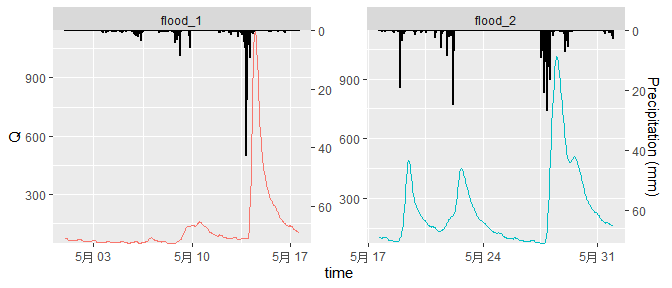

Overview
ggRunoff is an R package that can use the ggplot2 syntax to help you visualise rainfall-runoff process lines through the simplest functions in R language:
-
geom_rainfallRunoff()adds rainfall-runoff process line layer -
scale_y_precipitation()adjusts y-axis and second axis
| 洪水过程线 | 流量过程线 |
Installation
You can install the development version of ggRunoff from GitHub with:
# install.packages("remotes") or using `devtools`
remotes::install_github("cug-xyx/ggRunoff")Usage
Rainfall-runoff process lines
Firstly, load ggRunoff package and runoff_data.
library(ggRunoff)
data("runoff_data", package = "ggRunoff")
# add a flood type
runoff_data$flood_type = c(rep('flood_1', 400), rep('flood_2', 344))Check runoff_data.
tibble::tibble(runoff_data)
#> # A tibble: 744 x 4
#> time prcp Q flood_type
#> <dttm> <dbl> <dbl> <chr>
#> 1 2010-05-01 00:00:00 0 73.3 flood_1
#> 2 2010-05-01 01:00:00 0 72.8 flood_1
#> 3 2010-05-01 02:00:00 0 72.9 flood_1
#> 4 2010-05-01 03:00:00 0 73.3 flood_1
#> 5 2010-05-01 04:00:00 0 69.8 flood_1
#> # ... with 739 more rowsDraw rainfall-runoff process lines. Note that the parameter coef is a factor that adjusts the scale of rainfall and runoff. It is used in the geom_rainfallRunoff function to adjust the scale of the two on the graph, and in the scale_y_precipitation function to adjust the magnitude of the second coordinate axis.
set_coef = 15
ggplot(runoff_data, aes(x=time, Q)) +
geom_rainfallRunoff(
aes(runoff=Q, prcp=prcp, color=flood_type),
coef=set_coef, show.legend = F
) +
scale_y_precipitation(sec.name = 'Precipitation (mm)', coef = set_coef) +
facet_wrap(~flood_type, scales = 'free')
More examples produced by ggRunoff
Optimising results in Usage. Click here to see the source code.

Visualisation of hydrological model performance during calibration and validation periods at three sites by mnxuao. Click here to see the source code.